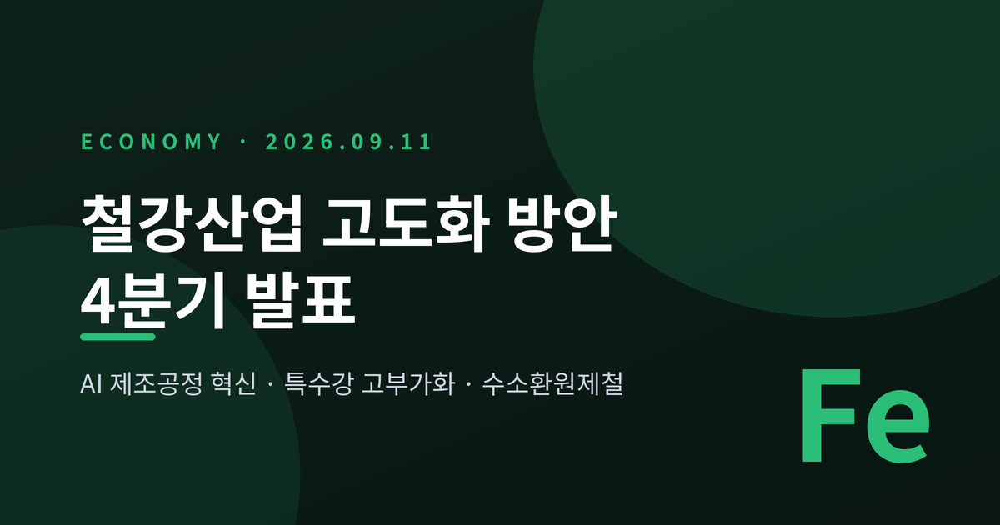
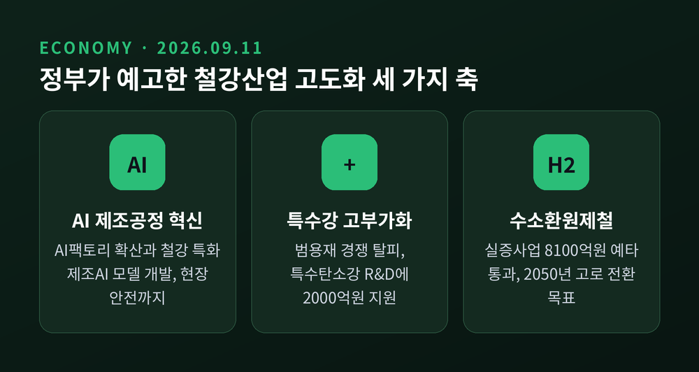
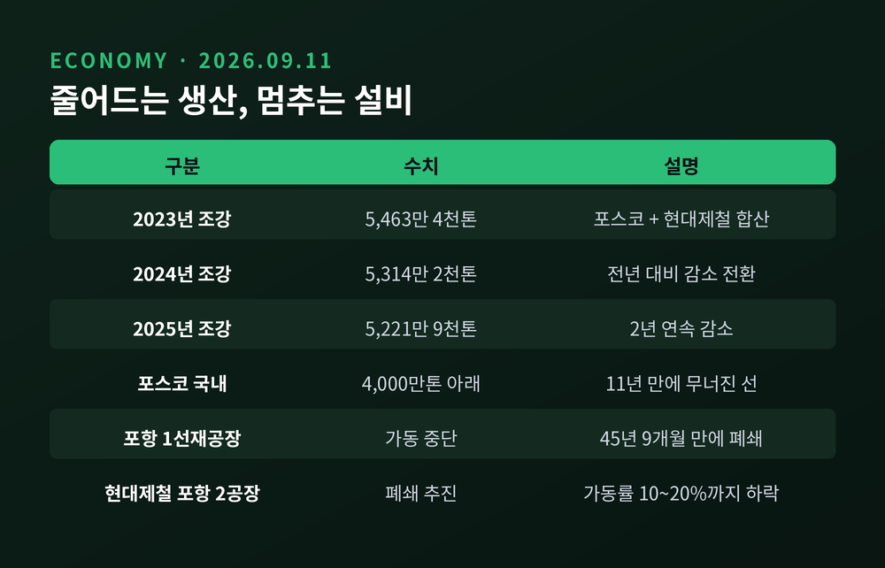
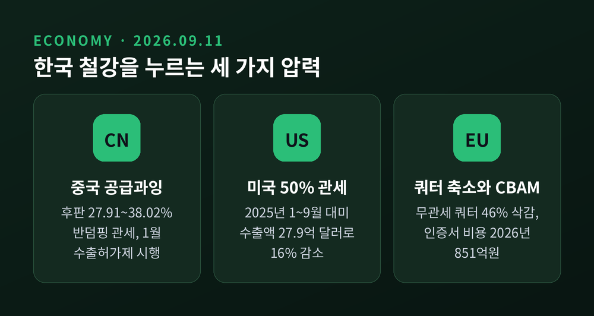
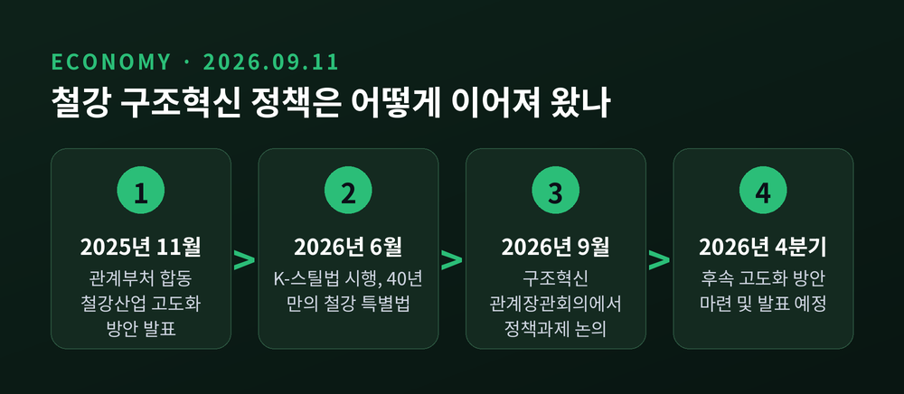
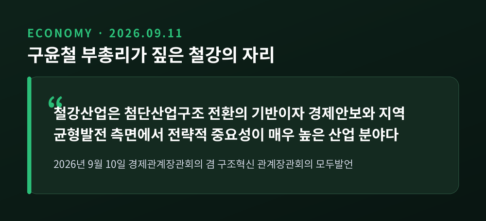

철강산업 고도화 방안 4분기 발표, 정부가 꺼낸 세 가지 축

이번 글에서는 2026년 9월 10일 경제관계장관회의에서 나온 철강산업 구조혁신 이야기를 정리해 보겠습니다.
정부가 4분기 중에 철강산업 고도화 방안을 내놓겠다고 예고했습니다.
왜 지금 철강인지, 그 배경에 무엇이 깔려 있는지 차근히 짚어보겠습니다.
세 줄 요약
- 구윤철 부총리가 9월 10일 경제관계장관회의 겸 구조혁신 관계장관회의를 주재하고 '철강산업 구조혁신을 위한 정책과제'를 논의했습니다.
- 정부는 AI 기반 제조공정 혁신, 특수강 등 고부가화, 수소환원제철 중심 저탄소 전환을 축으로 한 고도화 방안을 2026년 4분기 중 마련·발표하겠다고 밝혔습니다.
- 중국발 공급과잉, 미국 50% 관세, EU 탄소국경조정제도라는 삼중 압박이 이번 대책의 배경입니다.
9월 10일, 회의 테이블에 올라온 것들
구윤철 경제부총리 겸 재정경제부 장관이 9월 10일 오전 정부서울청사에서 회의를 주재했습니다.
이름은 '경제관계장관회의 겸 구조혁신 관계장관회의'입니다.
이날 테이블에 오른 안건은 네 가지였습니다.
철강산업 구조혁신을 위한 정책과제, 지식산업센터 공실 대책 및 제도개선 방안, 무역기반 재정·금융범죄 단속방안, 그리고 2027 서울 세계청년대회 재정지원 방안입니다.
이 가운데 시장의 눈길이 가장 오래 머문 것은 첫 번째 안건이었습니다.
구 부총리는 철강산업을 두고 "첨단산업구조 전환의 기반이자 경제안보와 지역 균형발전 측면에서 전략적 중요성이 매우 높은 산업 분야"라고 표현했습니다.
그러면서 AI 기반 제조공정 혁신, 특수강 등 고부가화, 수소환원제철 중심의 저탄소 전환을 담은 철강산업 고도화 방안을 4분기 중 마련해 발표하겠다고 했습니다.
철강에서 멈추지 않습니다.
석유화학을 비롯한 주력산업의 고도화 방안도 순차적으로 논의해 마련하겠다는 계획을 함께 밝혔습니다.

왜 하필 지금 철강인가
거시 지표만 놓고 보면 분위기가 나쁘지 않습니다.
구 부총리는 회의에서 2분기 경상 국내총생산(GDP)이 전년 동기 대비 26.4% 늘어 47년 만에 가장 높은 증가율을 기록했다고 소개했습니다.
2분기 명목 GDP는 834조9000억 원이었습니다. 반도체 초호황으로 수출가격이 수입가격보다 크게 오르면서 교역조건이 개선된 영향이 컸습니다.
같은 자리에서 1인당 국민총소득 4만 달러 달성 가능성이 더 커졌다는 평가도 나왔습니다.
고용도 방향은 위쪽입니다.
8월 취업자 수는 2915만1000명으로 전년 동월 대비 18만4000명 늘었습니다.
15~64세 고용률은 70.4%로, 8월 기준으로는 사상 처음 70%를 넘어섰습니다.
다만 그늘도 분명합니다.
같은 달 청년층(15~29세) 취업자는 14만3000명 줄었고, 청년 고용률은 44.1%로 1.0%포인트 떨어졌습니다.
청년 고용 부진은 수년째 이어지고 있습니다.
숫자가 좋아진 쪽은 반도체가 끌어올린 영역입니다.
철강은 반대편에 서 있습니다.
포스코와 현대제철의 합산 조강 생산량은 2023년 5463만4000톤에서 2024년 5314만2000톤, 2025년 5221만9000톤으로 2년 연속 줄었습니다.
포스코의 국내 조강 생산량은 11년 만에 4000만 톤 아래로 내려앉았습니다.
포항제철소 1선재공장은 45년 9개월 만에 문을 닫았고, 앞서 1제강공장도 가동을 멈췄습니다.
현대제철은 가동률이 10~20%까지 떨어진 포항 2공장의 폐쇄를 추진하고 있습니다.
예전에는 감산과 가동률 조정으로 버티는 것이 해법이었습니다.
지금은 설비 자체를 줄이고 품목을 바꾸는 단계로 넘어갔습니다.

밖에서 밀려오는 세 가지 압력
첫째, 중국입니다.
우리 정부는 중국산 후판에 27.91~38.02%, 중국산 열연강판에 28.16~33.10%, 일본산 열연강판에 31.58~33.43%의 반덤핑 관세를 부과했습니다.
효과는 나타났습니다. 중국산 열연강판 수입은 전년 동월 대비 65% 줄어든 3만8000톤까지 내려갔습니다.
중국 쪽 사정도 달라졌습니다.
2026년 1분기 중국 조강 생산량은 약 2억4755만 톤으로 전년 동기 대비 4.6% 감소했습니다.
연간 5000만 톤 규모의 감산이 추진되고 있고, 2026년 1월부터는 철강 수출허가제가 시행됐습니다.
다만 반덤핑 관세를 보는 눈이 하나는 아닙니다.
철강업계는 저가 수입재를 막아야 수익성이 회복된다고 봅니다.
반면 조선·건설처럼 철강을 사다 쓰는 산업에서는 원가 부담을 걱정합니다. 같은 조치가 누구에게는 방패이고 누구에게는 비용인 셈입니다.
둘째, 미국입니다.
미국은 철강에 50% 관세를 유지하고 있습니다.
2025년 1~9월 대미 철강 수출액은 27억8958만 달러로 전년 동기 대비 16% 줄었습니다.
그런데 전부 내리막인 것만은 아닙니다.
2026년 4월 미국향 철강재 수출 물량은 전년 동월 대비 71.4% 늘었습니다.
미국의 AI 데이터센터와 전력망 투자가 확대되면서 강관·철근 수요가 살아난 덕입니다.
품목에 따라 명암이 갈린다고 보는 편이 정확하겠습니다.
기업들은 현지 생산으로 답을 찾고 있습니다.
현대제철과 포스코는 미국 루이지애나에 58억 달러, 약 8조 원을 들여 연산 270만 톤 규모 전기로 제철소를 짓습니다.
지분은 현대제철 50%, 현대차 15%, 기아 15%, 포스코 20%로 나눴습니다. 9월 4일 기공식을 치렀고 2029년 양산이 목표입니다.
셋째, 유럽입니다.
EU는 무관세 수입 쿼터를 3382만 톤에서 1835만 톤으로 약 46% 줄였습니다. 쿼터를 넘긴 물량에 붙는 관세는 25%에서 50%로 두 배가 됐습니다.
한국은 감소폭을 19.7%로 막아냈습니다. 전용 국가쿼터 207만3000톤에 공용쿼터 147만5000톤을 더하면 최대 354만8000톤까지 무관세 수출이 가능합니다.
여기에 탄소국경조정제도(CBAM)가 겹칩니다.
2023년 10월부터 이어진 전환기간이 끝나고 2026년 1월 1일부터 본격 시행에 들어갔습니다. 첫 신고와 인증서 제출 기한은 2027년 9월 30일입니다.
대한상공회의소 지속성장이니셔티브 추산에 따르면 국내 철강업계의 인증서 구매 비용은 2026년 851억 원에서 2034년 5500억 원을 넘어섭니다. 10년 누적으로는 3조 원 이상입니다.
철강의 전방연쇄효과는 1.52로 제조업 평균 1.05를 크게 웃돕니다.
철강 원가가 오르면 금속가공, 전기장비, 운송장비, 기계, 건설로 부담이 번져 나간다는 뜻입니다.

이번이 처음은 아닙니다
이번 발표를 백지에서 나온 것으로 읽으면 그림이 어긋납니다.
정부는 이미 2025년 11월 4일 관계부처 합동으로 '철강산업 고도화 방안'을 발표했습니다.
설비 규모조정에 세 가지 원칙을 세웠습니다.
공급과잉이 심화된 형강·강관은 기업의 설비 조정 계획과 고용유지 노력을 전제로 지원하고, 수입재 침투율이 낮은 철근은 자발적 사업재편 여건을 조성하며, 경쟁력이 유지되는 전기강판·특수강에는 선제 투자에 나선다는 내용입니다.
지원 금액도 붙었습니다.
특수탄소강 R&D에 2000억 원, 철강 수출공급망 강화 보증상품에 4000억 원, 철강·알루미늄·구리·파생상품 이차보전사업에 1500억 원입니다.
한국형 수소환원제철 실증사업은 8100억 원 규모로 2025년 6월 예비타당성조사를 통과했습니다.
법적 토대도 마련됐습니다.
철강산업 경쟁력 강화 및 탄소중립 전환 특별법, 이른바 K-스틸법이 2025년 11월 27일 국회를 통과해 12월 16일 공포됐고 2026년 6월 17일 시행에 들어갔습니다.
1986년 철강산업육성법이 폐지된 뒤 약 40년 만의 철강 특별법입니다.
저탄소 철강 인증제, 저탄소 철강 특구 지정, 사업재편을 위한 공정거래법 특례가 담겼습니다.
즉 이번 9월 10일 회의는 새로운 선언이 아니라 기존 흐름의 점검이자 다음 단계 예고에 가깝습니다.

세 가지 축을 어떻게 볼 것인가
AI 기반 제조공정 혁신은 이미 추진 중인 제조 AI 전환의 연장선입니다.
정부는 철강 부문의 AI팩토리·AI솔루션 확산과 철강 특화 제조AI 모델 개발을 밝힌 바 있습니다.
생산성만의 문제가 아닙니다. 중대재해가 잦은 현장에서 AI 기반 사전 예방시스템이 갖는 의미도 작지 않습니다.
특수강 등 고부가화는 범용재 경쟁으로는 더 이상 버티기 어렵다는 판단에서 나옵니다.
특수탄소강은 정부의 초혁신경제 15대 선도프로젝트 가운데 하나로 이미 선정돼 있습니다.
수소환원제철은 가장 멀고 가장 무거운 과제입니다.
포스코는 포항제철소에 연산 30만 톤 규모의 독자기술 하이렉스(HyREX) 실증설비를 짓고, 2030년까지 기술을 검증한 뒤 2050년까지 기존 고로 7기를 수소환원제철로 전환하겠다는 목표를 두고 있습니다.
정부는 포스코그룹이 2030년까지 계획한 73조 원 규모 투자를 뒷받침한다는 방침입니다.
관건은 값싼 청정수소를 충분히 확보할 수 있느냐입니다.
전기로 확대에 필요한 철스크랩 수급 안정도 함께 풀어야 합니다.
어느 쪽도 4분기 대책 한 번으로 끝날 성격이 아닙니다.

함께 나온 지식산업센터 대책
같은 회의에서 지식산업센터 공실 대책도 확정됐습니다.
최근 3년(2023~2025년)에 준공된 지식산업센터의 평균 공실률은 43.5%, 미분양률은 26.9%에 이릅니다.
정부는 수도권의 경우 LH의 비주택 리모델링 매입임대주택 사업을 통해 공실을 청년·신혼부부 공공임대주택으로 바꾸기로 했습니다.
입주 업종 규제는 열거 방식에서 네거티브 방식으로 전면 개편해 AI·물류·드론 같은 신산업을 들이고, 지원시설 면적 비중은 수도권 30%에서 50%로, 비수도권 50%에서 70%로 높입니다.
모집공고안 승인 전 분양홍보관 설치와 분양권 쪼개기 전매는 금지됩니다.
철강과 무관해 보이지만 결은 같습니다.
비어 있는 설비와 공간을 어떻게 다시 쓸 것인가라는 질문입니다.
앞으로 무엇을 지켜봐야 할까
4분기 발표까지 남은 시간은 길지 않습니다. 확인해야 할 것은 세 가지라고 생각합니다.
첫째, 설비 감축의 구체적 규모와 방식입니다.
2025년 11월 원칙은 세웠지만 어느 품목을 얼마나 줄이고 고용은 어떻게 지킬지가 이번 방안의 실질이 될 것입니다.
둘째, 저탄소 전환 비용을 누가 부담하느냐입니다.
CBAM 인증서 비용은 2030년 이후 가파르게 오릅니다. 청정수소 인센티브와 전기요금 대책이 함께 나오지 않으면 계획은 종이에 머무릅니다.
셋째, 통상 협상의 후속입니다.
미국 50% 관세와 EU 쿼터 축소는 국내 대책만으로 풀리지 않습니다.
한계도 인정해야겠습니다.
정부가 예고한 세 가지 축은 방향으로는 옳지만, 셋 다 시간이 오래 걸리는 일입니다. 당장 이번 분기의 실적을 바꿔줄 성질의 정책은 아닙니다.
정리하면 이렇습니다.
이번 회의는 "철강을 어떻게 지킬 것인가"에서 "철강을 어떻게 바꿀 것인가"로 질문이 옮겨갔음을 보여줍니다.
설비를 줄이는 일과 기술을 바꾸는 일이 같은 대책 안에 들어온 것이 그 증거입니다.
4분기에 나올 방안이 숫자와 일정까지 담아낼 수 있을지, 그때 다시 살펴보려 합니다.
이 글은 정보 제공을 목적으로 작성했으며, 특정 종목이나 자산에 대한 투자 권유가 아닙니다.
인용한 수치는 작성 시점(2026년 9월 11일)의 공개 자료를 기준으로 하며, 투자 판단과 그 결과에 대한 책임은 투자자 본인에게 있습니다.